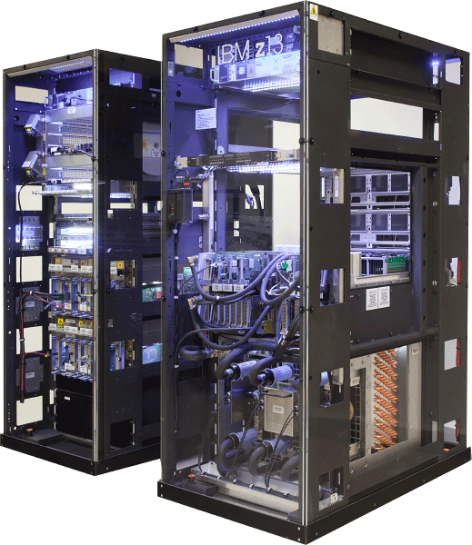

En AutoG Te ayudamos a automatizar tus procesos.
"Es calidad es AutoG"
En AutoG nos encargamos de la automatizacion de procesos industriales asi como el mantenimiento de tableros,sensores,HMI motores variadores de frecuencias arranques estrella triangulo fajas y tambien ofrecemos nuestros productos en nuestro catalogo online.
> Ver mas
